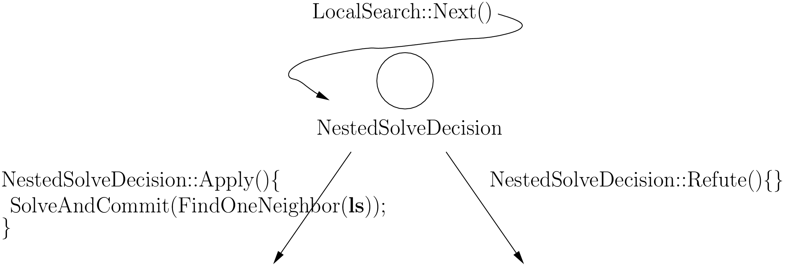
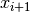
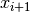
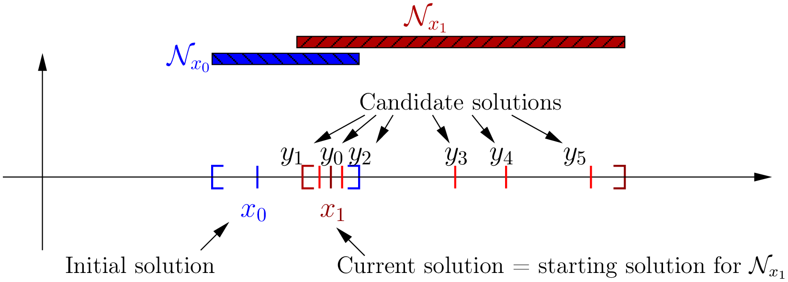
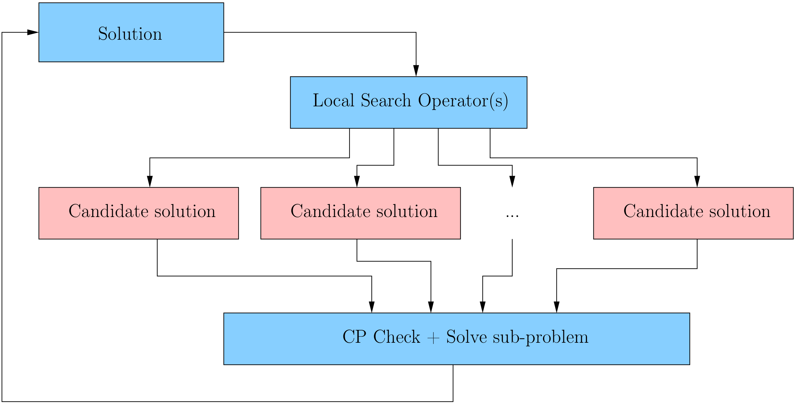

6.5. Basic working of the solver: Local Search
In this section, we present the implementation of Local Search in or-tools. First, we sketch the main basic idea and then we list the main actors (aka classes) that participate in the Local Search. It’s good to keep them in memory for the rest of this section. We then overview the implementation and describe some of its main components. Finally, we detail the inner workings of the Local Search algorithm and indicate where the callbacks of the SearchMonitors are called.
We present a simplified version of the local search algorithm. Yes, this is well worth a warning box!
Warning
We describe a simplified version of the local search algorithm.
6.5.1. The basic idea
The Local Search algorithm is implemented with the LocalSearch DecisionBuilder which returns NestedSolveDecisions (through its Next() method). These NestedSolveDecisions in turn collect the solutions returned by the FindOneNeighbor DecisionBuilder in their left branches (and don’t do anything in their right branches). As its name implies, the FindOneNeighbor DecisionBuilder tries to find one solution. The LocalSearch DecisionBuilder stops the search when stopping criteria are met or when it can not improve the last solution found. This solution is thus a local optimum w.r.t. the chosen neighborhood.
If needed, the search can be restarted again around a new initial solution. The LocalSearch DecisionBuilder then acts like a multi-restart DecisionBuilder. We exploit this property in the chapter Meta-heuristics: several previous problems when we implement (meta-)heuristics based on local searches that restart from a given solution.
Wow, this went fast! Let’s summarize all this in the next picture:
ls is the LocalSearchOperator that constructs the candidate solutions. The search tree very quickly becomes completely unbalanced if we only keep finding solutions in the left branches. We’ll see a balancing mechanism that involves one BalancingDecision at the end of this section.
Speaking about candidate solutions, let’s agree on some wordings. The next figure presents the beginning of a Local Search.
 is the initial solution. In or-tools, this solution is given by an Assignment or a DecisionBuilder that
the LocalSearch class uses to construct this initial solution. are solutions. As we have seen,
the Local Search algorithm moves from one solution to another. It takes a starting solution
is the initial solution. In or-tools, this solution is given by an Assignment or a DecisionBuilder that
the LocalSearch class uses to construct this initial solution. are solutions. As we have seen,
the Local Search algorithm moves from one solution to another. It takes a starting solution  and visit the
neighborhood defined around to find the next solution . By visiting the neighborhood, we mean
constructing and testing feasible solutions
and visit the
neighborhood defined around to find the next solution . By visiting the neighborhood, we mean
constructing and testing feasible solutions  of this neighborhood. We call these solutions
candidate solutions. In the code, they are called neighbors. The LocalSearchOperator produces these candidates and
the FindOneNeighbor DecisionBuilder filter these out to keep the interesting candidate solutions only. When a
stopping criteria is met or the neighborhood has been exhausted, the current solution of the CP solver is the next starting
solution.
of this neighborhood. We call these solutions
candidate solutions. In the code, they are called neighbors. The LocalSearchOperator produces these candidates and
the FindOneNeighbor DecisionBuilder filter these out to keep the interesting candidate solutions only. When a
stopping criteria is met or the neighborhood has been exhausted, the current solution of the CP solver is the next starting
solution.
Let’s illustrate this:
The code consistently use the term neighbor to denote what we call a candidate solution in this manual. We prefer to emphasize the fact that this neighbor solution is in fact a feasible solution that the CP solver tests and accepts or rejects.
Warning
In this manual, we use the term candidate solution for what is consistently called a neighbor in the code.
6.5.1.1. The main actors
The main classes involved in the local search algorithm are:
- LocalSearch: This DecisionBuilder controls the local search algorithm.
- LocalSearchPhaseParameters: This class gathers the components to define the current local search.
- LocalSearchOperators: This class is responsible of constructing the candidate solutions.
- FindOneNeighbor: This DecisionBuilder filters the candidate solutions given by the LocalSearchOperator and only constructs filtered and accepted (solutions accepted by the CP solver as feasible solutions) solutions.
- NestedSolveDecision: This Decision invokes a nested search with another DecisionBuilder (FindOneNeighbor in this case) in its left branch (Apply() method) and does nothing in its right branch (Refute() method).
- LocalSearchFilter: This filter allows to immediately skip (discard) a candidate solution. It is used by FindOneNeighbor to filter the candidate solutions.
We will not discuss the filtering mechanism here (see the dedicated section Filtering).
6.5.2. Overview of the Local Search Mechanism in or-tools
The next figure illustrates the basic mechanism of local search in or-tools:
We start with an initial feasible solution. The MakeOneNeighbor() callback method from the local search operator(s)[1] constructs candidate solutions one by one[2]. These solutions are checked by the CP solver and completed if needed. The “best” solution is chosen and the process is repeated starting with this new improved solution[3].
| [1] | In the code, you are only allowed to use one LocalSearchOperator but you can combine several LocalSearchOperators in one LocalSearchOperator. This is a common pattern in the code. |
| [2] | MakeOneNeighbor() is a convenient method. The real method to create a new candidate is MakeNextNeighbor(Assignment* delta, Assignment* deltadelta) but you have to deal with the low level delta and deltadelta. We discuss these details in the section LocalSearchOperators: the real thing!. |
| [3] | By default, the solver accepts the first feasible solution and repeats the search starting with this new solution. The idea is that if you combine the local search with an ObjectiveVar, the next feasible solution will be a solution that beats the current best solution. You can change this behaviour with a SearchLimit. See below. |
The whole search process stops whenever a stopping criterion is reached or the CP solver cannot improve anymore the current best solution.
Let’s describe some pieces of the or-tools mechanism for local search:
- initial solution: we need a feasible solution to start with. You can either pass an Assignment or a DecisionBuilder to the LocalSearch‘s constructor.
- LocalSearchPhaseParameters: the LocalSearchPhaseParameters parameter holds the actual definition of the local search phase:
- a SolutionPool that keep solution(s);
- a LocalSearchOperator used to explore the neighborhood of the current solution. You can combine several LocalSearchOperators into one LocalSearchOperator;
- a complementary DecisionBuilder to instantiate unbound variables once an (incomplete) candidate solution has been defined by the LocalSearchOperator. It will also complete the initial Assignment or the solution provided by the initial DecisionBuilder.;
- a Searchlimit specifying the stopping criteria each time we start searching a new neighborhood;
- an std::vector of LocalSearchFilters used to speed up the search by pruning unfeasible (or undesirable) candidate solutions: instead of letting the solver find out if a candidate solution is feasible or not, you can help it by bypassing its checking mechanism and telling it right away if a candidate solution is not feasible.
LocalSearchOperators are detailed in the next section and LocalSearchFilters in the section Filtering.
We now detail these two basics ingredients that are the initial solution and the LocalSearchPhaseParameters parameter.
6.5.2.1. The initial solution
To start the local search, we need an initial feasible solution. We can either give a starting solution or we can ask the CP solver to find one for us. To let the solver find a solution for us, we pass to it a DecisionBuilder. The first solution discovered by this DecisionBuilder will be taken as the initial solution.
There is a factory method for each one of the two options:
DecisionBuilder* Solver::MakeLocalSearchPhase(Assignment* assignment,
LocalSearchPhaseParameters* parameters)
DecisionBuilder* Solver::MakeLocalSearchPhase(
const std::vector<IntVar*>& vars,
DecisionBuilder* first_solution,
LocalSearchPhaseParameters* parameters)
In the file dummy_ls.cc, we use a gflags flag FLAG_initial_phase to switch between these two possibilities.
What are the variables involved in the local search procedure?
The local search only applies to the variables contained either in the Assignment or the std::vector<IntVar*> of variables given to MakeLocalSearchPhase().
6.5.2.2. The LocalSearchPhaseParameters parameter
The LocalSearchPhaseParameters parameter holds the actual definition of the local search phase.
It basically consists in:
a SolutionPool: as its name implies, this class is a pool of solutions. As usual, SolutionPool is a pure virtual class that must be implemented. One such implementation is the DefaultSolutionPool that only keeps the current solution. You don’t have to provide one as it is constructed by default if you use the appropriate factory method. If you want to keep intermediate solutions or want to modify these solutions during the search, you might have to implement your own version. Four methods have to be implemented:
- void Initialize(Assignment* const assignment): This method is called to initialize the SolutionPool with the initial Assignment.
- void RegisterNewSolution(Assignment* const assignment): This method is called when a new solution has been accepted by the local search algorithm.
- void GetNextSolution(Assignment* const assignment): This method is called when the local search algorithm starts a new neighborhood. assigment is the solution to start the new neighborhood search.
- bool SyncNeeded(Assignment* const local_assignment): This method checks if the current solution needs to be updated, i.e. the pool can oblige the solver to start a new neighborhood search with the next solution given by the pool (given by its GetNextSolution() method, see the Next() method of the FindOneNeighbor DecisionBuilder class below).
A SolutionPool gives you complete control on the starting solution(s). Note that the SolutionPool must take ownership of the Assignments it keeps[4].
[4] Well, you could devise another way to keep track of the solutions and take care of their existence but anyhow, you are responsible for these solutions.
a LocalSearchOperator: a LocalSearchOperator or a combination of LocalSearchOperators explore the neighborhood of the current solution. We detail them in the next section.
a DecisionBuilder: this complementary DecisionBuilder helps creating feasible solutions if your LocalSearchOperators only return partial solutions, i.e. solutions with unbounded variables. It also completes the initial solution if needed. If you know that your candidate and the initial solutions are already feasible, you don’t have to provide this DecisionBuilder (set the corresponding pointer to NULL).
a SearchLimit: This SearchLimit limits the search of one neighborhood. The most interesting statistic to limit is probably the number of found solutions:
SearchLimit * const limit = s.MakeSolutionsLimit(2);
This would limit the search to maximum two candidate solutions in the same neighborhood. By default, the CP solver stops the neighborhood search as soon as it finds a filtered and feasible candidate solution. If you add an OptimizeVar to your model, once the solver finds this good candidate solution, it changes the model to exclude solutions with the same objective value. The second solution found can only be better than the first one. See the section How does the solver optimize? to refresh your memory if needed. When the solver finds 2 solutions (or when the whole neighborhood is explored), it stops and starts over again with the best solution.
LocalSearchFilters: these filters speed up the search by bypassing the solver checking mechanism if you know that the solution must be rejected (because it is not feasible, because it is not good enough, ...). If the filters accept a solution, the solver still tests the feasibility of this solution.
LocalSearchFilters are discussed in the section Filtering.
Several factory methods are available to create a LocalSearchPhaseParameters parameter. At least you need to declare a LocalSearchOperator and a complementary DecisionBuilder:
LocalSearchPhaseParameters * Solver::MakeLocalSearchPhaseParameters(
LocalSearchOperator *const ls_operator,
DecisionBuilder *const
complementary_decision_builder);
You can also pass all the above enumerated parameters :
LocalSearchPhaseParameters* Solver::MakeLocalSearchPhaseParameters(
SolutionPool* const pool,
LocalSearchOperator* const ls_operator,
DecisionBuilder* const
complementary_decision_builder,
SearchLimit* const limit,
const std::vector<LocalSearchFilter*>& filters);
The LocalSearchOperator will find candidate solutions while the complementary_decision_builder DecisionBuilder will complete the candidate solutions if some of the variables are not assigned.
A handy way to create a DecisionBuilder to assist the local search operator(s) is to limit one with MakeSolveOnce(). MakeSolveOnce is a DecisionBuilder that takes another DecisionBuilder db and SearchMonitors:
DecisionBuilder * const db = ...
SearchLimit* const limit = solver.MakeLimit(...);
DecisionBuilder * const complementary_decision_builder =
solver.MakeSolveOnce(db, limit);
The SolveOnce DecisionBuilder created by MakeSolveOnce() will collapse the search tree described by the DecisionBuilder db and a set of SearchMonitors and wrap it into a single point. The nested search stops after the first solution is found. If there are no solutions in this nested tree, then (the Next() method of) SolveOnce will fail.
If you know for sure that your LocalSearchOperator will return feasible solutions, you don’t have to provide a DecisionBuilder to assist: just submit NULL as argument for the DecisionBuilder pointer.
6.5.3. The basic local search algorithm and the callback hooks for the SearchMonitors
We feel compelled to use our warning box again:
Warning
We describe a simplified version of the Local Search algorithm.
If you want to know more, have a look at the section Local Search (LS) in the chapter Under the hood.
In this subsection, we present the following callbacks of the SearchMonitor class and show you exactly when they are called in the Local Search algorithm:
| Methods | Descriptions |
|---|---|
| LocalOptimum() | When a local optimum is reached. If true is returned, the last solution is discarded and the search proceeds to find the next local optimum. Handy when you implement a meta-heuristic with a SearchMonitor. |
| AcceptDelta(Assignment *delta, Assignment *deltadelta) | When the LocalSearchOperator has produced the next candidate solution given in the form of delta and deltadelta. You can accept or reject this new candidate solution. |
| AcceptNeighbor() | After accepting a candidate solution during local search. |
| PeriodicCheck() | Periodic call to check limits in long running procedures, like Local Search. |
To ensure the communication between the local search and the global search, three utility functions are defined. These functions simply call their SearchMonitor‘s counterparts, i.e. they call the corresponding methods of the involved SearchMonitors:
- bool LocalOptimumReached(): FalseExceptIfOneTrue.
- bool AcceptDelta(): TrueExceptIfOneFalse.
- void AcceptNeighbor(): Notification.
Before we delve into the core of the local search algorithm and the implementation of the LocalSearch DecisionBuilder‘s Next() method, we first discuss the inner workings of the FindOneNeighbor DecisionBuilder whose job is to find the next filtered and accepted candidate solution. This DecisionBuilder is used inside a NestedSolveDecision that we study next. This Decision is returned by the Next() method of the LocalSearch DecisionBuilder in the main loop of the local search algorithm. Finally, we address the LocalSearch DecisionBuilder class. In particular, we study its initializing phase and its Next() method. We consider the case where an initial DecisionBuilder constructs the initial solution.
SearchMonitor‘s callbacks are indicated in the code by the comment:
// SEARCHMONITOR CALLBACK
6.5.3.1. The FindOneNeighbor DecisionBuilder
This DecisionBuilder tries to find the next filtered and accepted candidate solution. It tests (and sometimes completes) the candidate solutions given by the LocalSearchOperator.
We present its Next() method and discuss it after:
1 2 3 4 5 6 7 8 9 10 11 12 13 14 15 16 17 18 19 20 21 22 23 24 25 26 27 28 29 30 31 32 33 34 35 36 37 38 39 40 41 42 43 44 45 46 47 48 49 50 51 52 53 54 55 56 57 58 59 60 61 62 63 64 65 66 67 68 | Decision* FindOneNeighbor::Next(Solver* const solver) {
// No neighbor (candidate solution) found
// only on the first call to Next().
if (!neighbor_found_) {
// SYNCHRONIZE ALL
...
}
// Another assignment is needed to apply the delta
Assignment* assignment_copy =
solver->MakeAssignment(reference_assignment_.get());
int counter = 0;
DecisionBuilder* restore =
solver->MakeRestoreAssignment(assignment_copy);
if (sub_decision_builder_) {
restore = solver->Compose(restore, sub_decision_builder_);
}
Assignment* delta = solver->MakeAssignment();
Assignment* deltadelta = solver->MakeAssignment();
// MAIN LOOP
while (true) {
delta->Clear();
deltadelta->Clear();
// SEARCHMONITOR CALLBACK
solver->TopPeriodicCheck();
if (++counter >= FLAGS_cp_local_search_sync_frequency &&
pool_->SyncNeeded(reference_assignment_.get())) {
// SYNCHRONIZE ALL
...
counter = 0;
}
if (!limit_->Check()
&& ls_operator_->MakeNextNeighbor(delta, deltadelta)) {
solver->neighbors_ += 1;
// SEARCHMONITOR CALLBACK
const bool meta_heuristics_filter =
AcceptDelta(solver->ParentSearch(), delta, deltadelta);
const bool move_filter = FilterAccept(delta, deltadelta);
if (meta_heuristics_filter && move_filter) {
solver->filtered_neighbors_ += 1;
assignment_copy->Copy(reference_assignment_.get());
assignment_copy->Copy(delta);
if (solver->SolveAndCommit(restore)) {
solver->accepted_neighbors_ += 1;
assignment_->Store();
neighbor_found_ = true;
return NULL;
}
}
} else {
if (neighbor_found_) {
// SEARCHMONITOR CALLBACK
AcceptNeighbor(solver->ParentSearch());
pool_->RegisterNewSolution(assignment_);
// SYNCHRONIZE ALL
...
} else {
break;
}
}
}
solver->Fail();
return NULL;
}
|
You might wonder why there are so many lines of code but there are a some subtleties to consider.
The code of lines 5 to 8 is only called the first time the Next() method is invoked and allow to synchronize the Local Search machinery with the initial solution. In general, the words SYNCHRONIZE ALL in the comments mean that we synchronize the Local Search Operators and the Local Search Filters with a solution.
reference_assignment_ is an Assignment with the initial solution while assignment_ is an Assignment with the current solution. On line 10, we copy reference_assignment_ to the local assignment_copy Assignment to be able to define the deltas. counter counts the number candidate solutions. This counter is used on line 29 to test if we shouldn’t start again the Local Search with another solution.
On lines 15-19, we define the restore DecisionBuilder that will allow us to keep the newly found candidate solution.
We construct the delta and deltadelta on lines 20 and 21 and are now ready to enter the main loop to find the next solution.
On lines 25 and 26 we clear our deltas and on line 28 we allow for a periodic check: for searches that last long, we allow the SearchMonitors to interfere and test if the search needs to continue or not and/or must be adapted.
Lines 29-34 allow to change the starting solution and ask the solution pool pool_ for a new solution via its GetNextSolution(). The FLAGS_cp_local_search_sync_frequency value corresponds to the number of attempts before the CP solver tries to synchronize the Local Search with a new solution.
On line 36 and 37, the SearchLimits applied to the search of one neighborhood are tested. If the limits are not reached and if the LocalSearchOperator succeeds to find a new candidate solution, we enter the if statement on line 38. The LocalSearchOperator‘s MakeNextNeighbor() method is called to create the next candidate solution in deltas format.
If you overwrite the MakeNextNeighbor() method, you need to manage the deltas: you must take care of applying and reverting the deltas yourself if needed. You can use the ApplyChanges() and RevertChanges() helper functions to do so. For instance, here is the implementation of the MakeNextNeighbor() method of the IntVarLocalSearchOperator:
bool IntVarLocalSearchOperator::MakeNextNeighbor(Assignment* delta,
Assignment* deltadelta) {
CHECK_NOTNULL(delta);
while (true) {
RevertChanges(true);
if (!MakeOneNeighbor()) {
return false;
}
if (ApplyChanges(delta, deltadelta)) {
return true;
}
}
return false;
}
ApplyChanges() actually fills the deltas after you use the helper methods SetValue(), Activate() and the like to change the current candidate solution.
Once we enter the if statement on line 38, we have a new candidate solution and we update the candidate solution counter accordingly. It is now time to test this new candidate solution. The first test comes from the SearchMonitors in their AcceptDelta() methods. If only one SearchMonitor rejects this solution, it is rejected. In or-tools, we implement (meta-)heuristics with SearchMonitors. See the chapter Meta-heuristics: several previous problems for more.
The AcceptDelta() function is the global utility function we mentioned above. We’ll meet LocalOptimumReached() and AcceptNeighbor() a few lines below.
The second test is the filtering test on line 42. FilterAccept() returns a TrueExceptIfOneFalse. If both tests are successful, we enter the if statement on line 44. If not, we simply generate another candidate solution. On lines 44 and 46, we update the counter of filtered_neighbors_ and store the candidate solution in the assignment_copy Assignment.
On line 47, we try (and if needed complete) the candidate. If we succeed, the current solution and the counter accepted_neighbors_ are updated. The Next() method returns NULL because the FindOneNeighbor DecisionBuilder has finished its job at this node of the search tree. If we don’t succeed, the solver fails on line 66.
The SolveAndCommit() method is similar to the Solve() method except that SolveAndCommit will not backtrack all modifications at the end of the search and this is why you should:
Warning
Use the SolveAndCommit() method only in the Next() method of a DecisionBuilder!
If the if test on line 36 and 37 fails, we enter the else part of the statement on line 55. This means that either one SearchLimit was reached or that the neighborhood is exhausted. If a solution (stored in assignment_) was found during the local search, we register it and synchronize the LocalSearchOperators and LocalSearchFilters with a new solution provided by the solution pool pool_ on lines 58-60. We also notify the SearchMonitors on line 57. If no solution was found, we simply break out of the while() loop on line 62 and make the CP solver fail on line 66.
6.5.3.2. The NestedSolveDecision Decision
The NestedSolveDecision is the Decision that the LocalSearch‘s Next() method returns to find the next solution. This Decision is basically a Decision wrapper around a nested solve with a given DecisionBuilder and SearchMonitors. It doesn’t do anything in its right branch (in its Refute() method) and calls Solve() or SolveAndCommit() depending on a restore bool in its left branch (in its Apply() method).
The NestedSolveDecision Decision can be in three states that are also the three states of the Local Search:
| Value | Meaning |
|---|---|
| DECISION_FAILED | The nested search phase failed, i.e. Solve() or SolveAndCommit() failed. |
| DECISION_PENDING | The nested search hasn’t been called yet. The local search is in this state when it balances the search tree. |
| DECISION_FOUND | The nested search phase succeeded and found a solution, i.e. Solve() or SolveAndCommit() succeeded and returned true. |
The three states are defined in the NestedSolveDecision StateType enum.
We are now ready to assemble all the pieces of the puzzle together to understand the (simplified) local search algorithm in or-tools.
6.5.3.3. The LocalSearch DecisionBuilder
We first consider the initialization phase and then we discuss in details its Next() method.
Initialization
Consider the situation where we already have a LocalSearchPhaseParameters parameter set up and we let the CP solver construct the initial solution:
Solver s("Dummy LS");
...
std::vector<IntVar*> vars = ...
...
LocalSearchOperator * const ls_operator = ...
DecisionBuilder * const complementary_decision_builder = ...
...
LocalSearchPhaseParameters params =
s.MakeLocalSearchPhaseParameters(ls_operator,
complementary_decision_builder);
The complementary_decision_builder DecisionBuilder will help us complete the candidate solutions found by the LocalSearchOperator ls_operator. Our initial solution will be constructed by the initial_solution DecisionBuilder (and completed by the complementary_decision_builder DecisionBuilder if needed). Remember, that the solution chosen by the CP solver is the first solution found by this DecisionBuilder. We are now ready to create the DecisionBuilder for the local search:
DecisionBuilder * const initial_solution = ...
...
DecisionBuilder * const ls = s.MakeLocalSearchPhase(vars,
initial_solution,
params);
We can now add as many monitors as we want and launch the solving process:
std::vector<SearchMonitor *> monitors;
...
s.Solve(ls, monitors);
It’s interesting to see how this initial solution is constructed in the LocalSearch class. First, we create an Assignment to store this initial solution:
Assignment * const initial_sol = s.MakeAssignment();
To store an Assignment found by the CP solver, we use the StoreAssignment DecisionBuilder:
DecisionBuilder * store = solver->MakeStoreAssignment(initial_sol);
This DecisionBuilder simply stores the current solution in the initial_sol Assignment:
DecisionBuilder * initial_solution_and_store = solver->Compose(
initial_solution,
complementary_decision_builder,
store);
initial_solution_and_store constructs this initial solution. This DecisionBuilder is used in a nested search:
std::vector<SearchMonitor *> monitors;
monitors.push_back(limit);
NestedSolveDecision * initial_solution_decision =
new NestedSolveDecision(initial_solution_and_store,
false,
monitors);
where:
- limit is the SearchLimit given to the local search algorithm;
- the NestedSolveDecision constructor’s arguments are respectively:
- a DecisionBuilder to construct the next solution;
- a bool to indicate if we restore the last solution in case we cannot find a solution;
- an std::vector<SearchMonitor *>.
The Apply() method of a NestedSolveDecision calls SolveAndCommit():
solver->SolveAndCommit(initial_solution_and_store, monitors);
where the arguments respectively are:
- a DecisionBuilder;
- an std::vector<SearchMonitor *>.
The DecisionBuilder companion to StoreAssignment is RestoreAssignment that installs an Assignment as the current solution:
Assignment * solution = ...
...
DecisionBuilder * current_sol = s.MakeRestoreAssignment(solution);
...
// do something fancy starting with current_sol
DecisionBuilder * fancy_db = s.Compose(current_sol, ...);
...
s.Solve(fancy_db,...);
This is exactly the DecisionBuilder used when you give an initial solution to the CP solver. The initial_solution DecisionBuilder is simply replaced with a RestoreAssignment DecisionBuilder taking your initial Assignment.
Now that we have developed the machinery to find and test the initial solution, we are ready to wrap the nested solve process into a NestedSolveDecision:
// Main DecisionBuilder to find candidate solutions one by one
DecisionBuilder* find_neighbors =
solver->RevAlloc(new FindOneNeighbor(assignment_,
pool_,
ls_operator_,
sub_decision_builder_,
limit_,
filters_));
NestedSolveDecision* decision = solver->RevAlloc(
new NestedSolveDecision(find_neighbors,
false)));
The boolean argument in the NestedSolveDecision‘s constructor indicates that we don’t want to backtrack. The decision Decision will thus call SolveAndCommit() in its left branch.
The Next() method
The Next() method of the LocalSearch DecisionBuilder is in charge of controling the Local Search. We present it first and discuss it next:
1 2 3 4 5 6 7 8 9 10 11 12 13 14 15 16 17 18 19 20 21 22 23 24 25 26 27 28 29 30 31 32 33 34 35 36 37 38 39 | Decision * Next(Solver * solver) {
...
const int state = decision->state();
switch (state) {
case NestedSolveDecision::DECISION_FAILED: {
// SEARCHMONITOR CALLBACK
if (!LocalOptimumReached(solver->ActiveSearch())) {
// Stop the current search
...
}
solver->Fail();
return NULL;
}
case NestedSolveDecision::DECISION_PENDING: {
// Stabilize search tree by balancing the current search tree.
// Statistics are updated even if this is not relevant to the
// global search
...
const int depth = solver->SearchDepth();
if (depth < kLocalSearchBalancedTreeDepth) {
return solver->balancing_decision();
} else if (depth > kLocalSearchBalancedTreeDepth) {
solver->Fail();
}
...
return decision;
}
case NestedSolveDecision::DECISION_FOUND: {
// Nothing important for us in this simplified version
...
return NULL;
}
default: {
LOG(ERROR) << "Unknown local search state";
return NULL;
}
}
return NULL;
}
|
The decision variable on line 3 is the NestedSolveDecision created with the FindOneNeighbor DecisionBuilder. We switch between three cases depending on the state of the nested search initiated by this Decision.
- Line 5: case DECISION_FAILED: The nested solving process failed, meaning that there are no solution left. We let the SearchMonitors decide if a local optimum has been reached and cannot be improved. LocalOptimum() returns a FalseExceptIfOneTrue.
- Line 14: case DECISION_PENDING: This is the most interesting case: we try to keep the search tree balanced and force its height to be bounded. kLocalSearchBalancedTreeDepth is set to 32. So as long as the tree height is smaller than 32, the LocalSearch DecisionBuilder returns the same BalancingDecision on line 21. BalancingDecisions don’t do anything by default. Once the search tree height is over 32, the NestedSolveDecision Decision enters in action and when the height of the three gets higher than 32, we make the CP solver Fail() to backtrack on line 23 thus keeping the height of the tree bounded.
- Line 28: case DECISION_FOUND: The nested search found a solution that is the current solution. The LocalSearch‘s Next() method has done its job at the current node and nothing needs to be done.
Solve(), SolveAndCommit(), SolveOnce(), etc...: what are the differences?
This topic is so important that the whole section What are my solving options? is devoted to it. You already can jump and read this section if you’re curious.
Google or-tools |
User's Manual
Google search
Welcome
Tutorial examples
Current chapter
6. Local search: the job-shop problem
Previous section
6.4. What is local search (LS)?